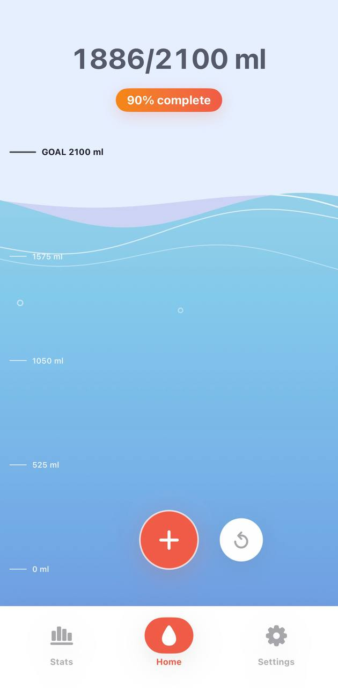
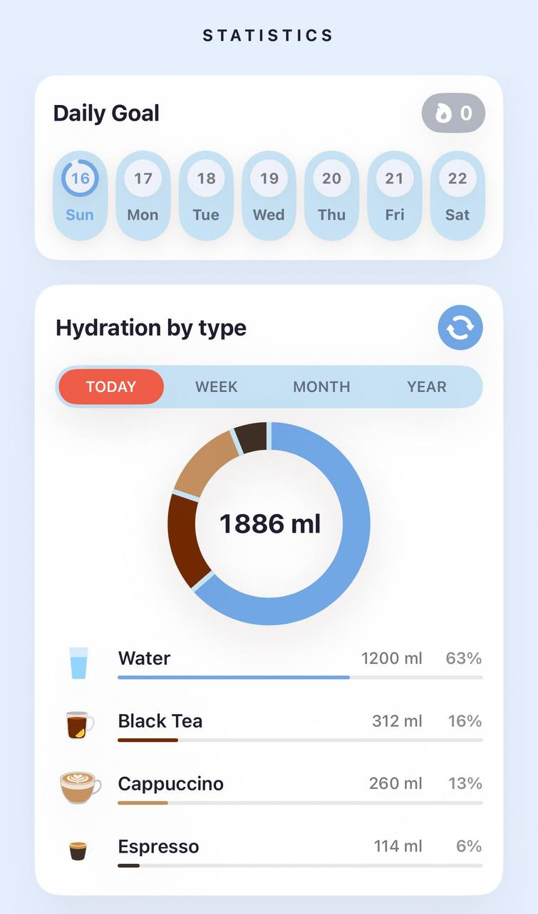
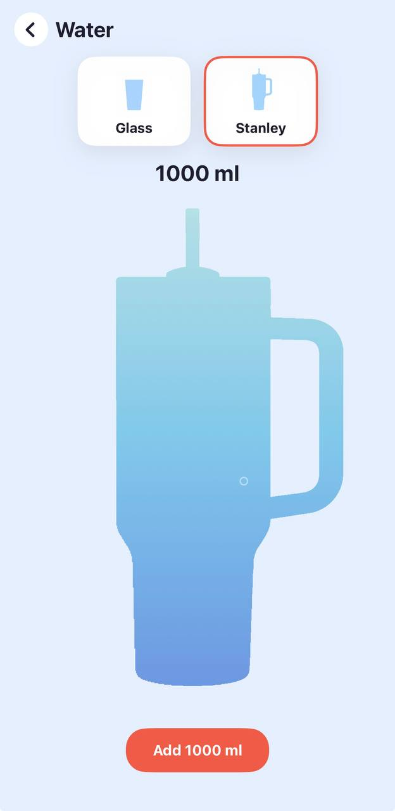

1
Smart drink logging
Choose from a broad drink catalog with common volumes and hydration values, or create a custom drink with your own hydration, caffeine, calorie, and alcohol data.
Hydration that understands real drinks
Log water, coffee, tea, juice, soda, milk, sports drinks, and alcohol. See how each drink contributes to hydration, caffeine, calories, and daily progress.

Murmur is designed around the way people actually drink: one bottle of water, a latte, a smoothie, a sports drink, or a cocktail all count differently.
Choose from a broad drink catalog with common volumes and hydration values, or create a custom drink with your own hydration, caffeine, calorie, and alcohol data.
Use an automatic goal based on your profile and daily conditions, or set a manual goal. A doctor-defined mode is available when you need to follow professional guidance.
Track caffeine intake by source and see an estimated body caffeine curve with a sleep line for evening awareness.
Review daily goal completion, weekly progress, monthly calendars, drink breakdowns, and hydration streaks.
Switch between ml and oz, kg and lb, choose week start day, select app language, and tune reminders.
The main screen uses a calm animated water vessel with optional tilt motion, so checking your progress feels light and visual.
Your drink history, custom drinks, profile, and settings are stored on your device. The app does not use analytics, ads, or tracking SDKs.
Murmur works without sign-in, a backend account, or a subscription in the current app version.

Built-in drinks across water, coffee, tea, matcha, juice, soda, milk, functional drinks, and alcohol.
Day, week, month, and year views help you understand hydration patterns without a spreadsheet.
Hydration entries and settings stay in app storage on the device unless you choose to email support.

Your drink entries, daily goal snapshots, custom drinks, custom colors, and settings are stored locally on your device in the app's private storage. Murmur does not upload this data to a server.
The app can estimate a goal from optional profile settings such as age, weight, sex, pregnancy or breastfeeding status, activity level, and weather-style preferences. You can also set a manual goal or use a doctor-defined amount.
No. Murmur is an informational wellness tool. It does not diagnose, treat, or prevent disease. Follow guidance from a qualified healthcare professional, especially if you have a medical fluid restriction or condition affecting hydration.
Open Settings, General and Support, Notifications. If this is the first time, iOS will ask for permission. If permission was previously denied, the app opens iOS notification settings so you can change it there.
Yes. You can add custom drinks with a name, icon, color, default size, hydration percentage, caffeine, calories, and alcohol percentage. Custom drinks are stored locally on your device.